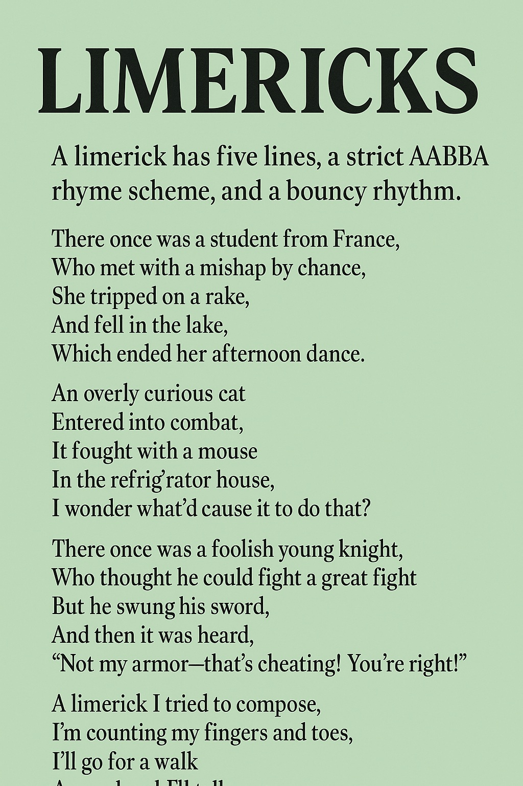
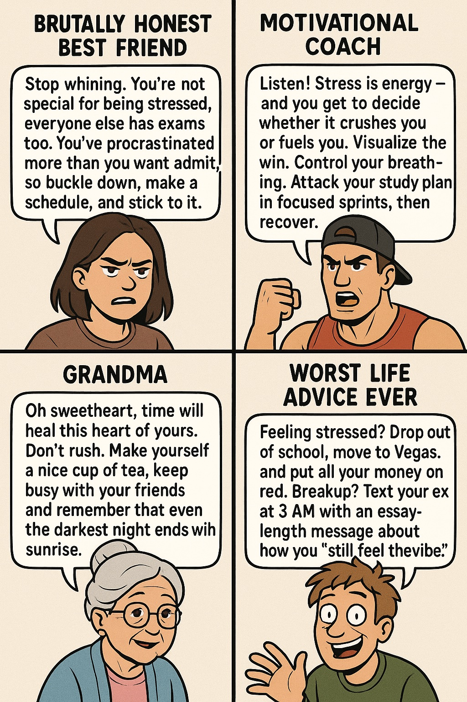
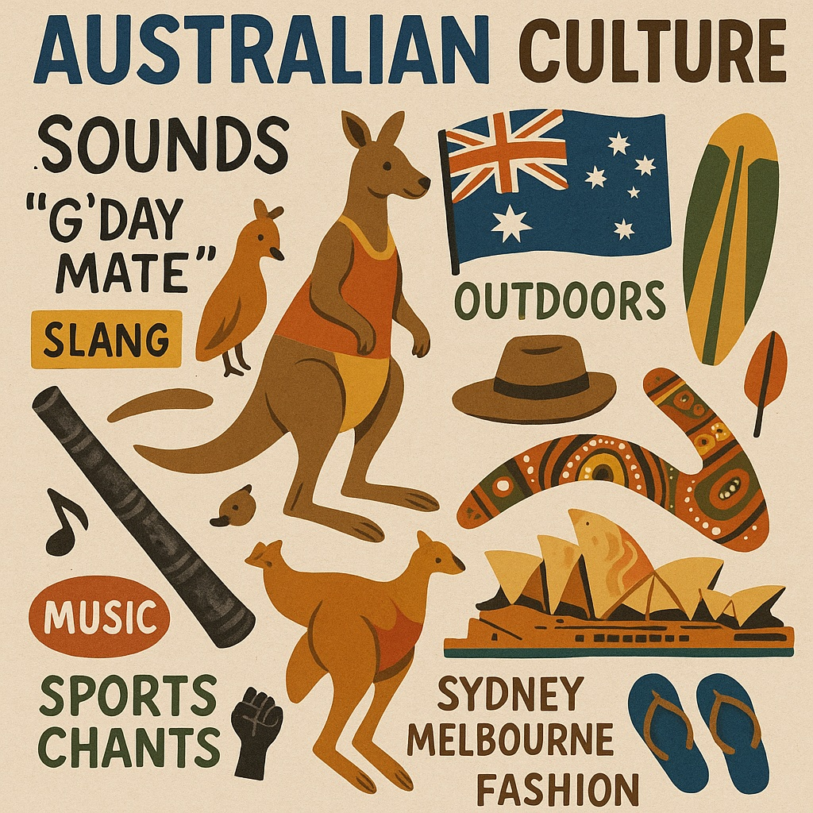

How short is too short?
What happens when you throw an AI into an improv class? No scripts, no context, no filters — just “Yes, and…” until chaos ensues.
AI as your therapist
Can AI replicate the typing dots?

Can AI learn to play?
What if an AI could serve as your lifeline through history?
What happens when you ask an LLM to be vulnerable?

AI Life Advice
Does AI know how to be sarcastic?

How do LLM’s write like an Australian person vs. an American person?
Does Chat GPT forget what day it is today?
The famous interview question — “Sell me this pen” — is designed to test persuasion, creativity, and audience awareness. Humans usually draw on psychology, context, and improvisation. But can an AI marketing intern pull it off?
Can AI spill the beans the same way we do? Idioms are complex; what we humans readily comprehend as figurative language often requires cultural context and personal experience.